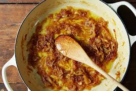

Home
Braised Onion Pasta

Ingredients
- 10 tbsp - Unsalted Butter
- 3 lbs - Yellow Onions
- 1 tbsp - Granulated Sugar
- pinch - Kosher Salt
- 1/2 cup - Fresh Rosemary
- 1/2 cup - Fresh Thyme
- 6 bulbs - Minced Garlic
- 1/4 cup - Madeira Wine
- 1 lbs - Pappardelle
- Parmesan for topping - to taste
Instructions
- a large skillet, warm the butter over medium heat. Add onions and cook, stirring occasionally, until they are soft and translucent
- Stir in the sugar and kosher salt, then reduce the heat to low. Add in garlic, thyme, and rosemary. Cook the mixture until onions are dark, carmelized, and borderline jammy
- Stir in the Madeira for a quick 2 to 3 minutes until the liquid is combined. Add the cooked pasta to the pan. Shower on a generous dusting of parmesan, and toss the pasta with the sauce
- Serve with additional grated parmesan.